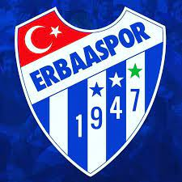
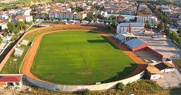

ERBAASPOR
Erbaaspor, 1947'de Tokat ilinin Erbaa ilçesinde kurulmuş bir spor kulübüdür. İç saha maçlarını 3.000 kişilik Erbaa İlçe Stadyumu'nda oynamaktadır. 1947'de kurulan Erbaaspor, 1988-89 sezonunda 3. Lig'de mücadele etmeye başladı. Birkaç sezon boyunca 3. Lig'de mücadele eden takım, 1995-96 sezonunda Amatör Lig'e düştü. 2010-11 sezonunda Bölgesel Amatör Lig'de mücadele eden takım play-out maçında Erbaa Güreş İhtisas'a 1-0 kaybetti ve Tokat 1. Amatör Ligi'ne düştü. 2015-2016 sezonunda tekrar Bölgesel Amatör Lig'de mücadele etmeye başladı. BAL 4. Grup'ta şampiyon olup Araklı Karaderespor'la oynadığı play-off maçını 1-0 kazanarak tekrar 3. Lig'e yükseldi. 2018-19 3. Lig 1. grupta yer alan Erbaaspor Kenan Öztürk ile başladığı sezonda 3. haftanın ardından Enver Şen, 14. haftanın ardından Ferhat Temoçin yönetiminde ligde mücadele etti. 32 maçta 9 galibiyet, 13 beraberlik ve 10 mağlubiyet aldı. 40 puan toplayarak grubunu 8. tamamladı.
